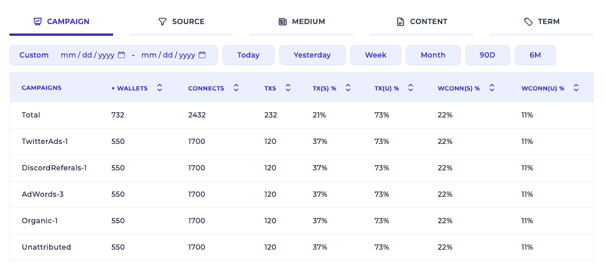

The ultimate Web3
user growth & retention
toolbox.
Polyflow matches user & device metadata with blockchain transaction info to give you unmatched insights into
your dApp usage.
Start Free Trial
Book a call
or subscribe to receive product updates
Subscribe